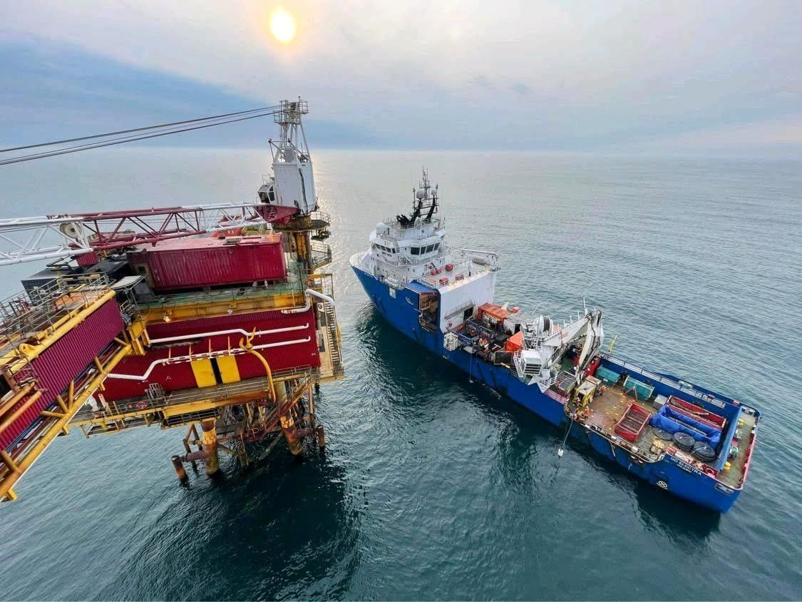

Sundance Energy Infrastructure
Project Advisor for shallow-water
oil-and-gas field development.
We help operators frame development options, identify the required project assets and work through the interfaces between field definition, engineering, fabrication, drilling and marine execution.
A connected development view
Bring the field concept
and delivery plan together.
A development decision depends on more than a single facility or equipment package. Wells, fluids, site conditions, processing, drilling access and the export route must work as one project.
Sundance supports the operator’s decisions through scope definition, concept comparison, asset evaluation and interface review.

Advisory scope
From opportunity assessment
to execution interfaces.
Each engagement has an agreed scope, deliverables and decision milestones.
- 01Opportunity & concept assessment
Review available field information, development options, constraints and data gaps. - 02Field development & FEED interfaces
Define the advisory brief and coordinate specialist engineering inputs and scope boundaries. - 03Fabrication & procurement support
Review package requirements, vendor capability and delivery assumptions.
- 04Drilling access & rig screening
Consider site-specific suitability, logistics and mobilization interfaces. - 05Marine & installation readiness
Align transport, load-out, lifting, survey, diving and ROV requirements with specialist providers. - 06Commissioning & milestone review
Support handover planning, progress reviews and the next operator decision.
Access to project assets
The right expertise
for the defined scope.
Sundance gives clients access to the marine and oilfield assets a project needs, including early production facilities and drilling rigs. Our advisory covers engineering, fabrication and marine requirements.
Asset selection and equipment availability depend on the project requirements. The operator retains investment and statutory decisions, with engineering and execution responsibilities defined in the project scope.
Explore the wider advisory practice →Start with the project basis.
Field location and water depth · well and reservoir summary · target production · existing facilities · oil and gas evacuation options · project stage and required decisions.
An initial advisory engagement can produce an opportunity assessment, development options and a asset sourcing and delivery plan.
Assess development readiness →Have a field development scope?
Let’s establish the project basis and the next decisions.